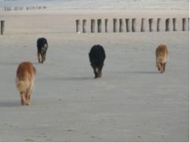

 Als je op vakantie gaat, moet je een oplossing verzinnen voor de hond. Neem je hem mee of laat je hem thuis verzorgen of in een pension? Controleer in alle gevallen of de chip op het juiste adres en telefoonnummer geregistreerd staat. Bewaar ook het paspoort met de gegevens van de dierenarts bij het dier en spreek duidelijk af wat er gebeurt als er een dierenarts nodig is. De kosten voor professionele vakantieopvang thuis of in een pension variëren van 8 tot 30 euro per dag, afhankelijk van de luxe in het pension en de grootte van de hond.
Als je bestemming het toelaat om honden mee te nemen, dan kan je dit overwegen. Check van tevoren of honden zijn toegestaan.
Let er op dat honden vaak niet goed tegen de warmte kunnen, dus een zonvakantie of stedentrip is geen aanrader. Er zijn wel speciale wandelvakanties voor mensen met een hond.
Let er op tijdens lange reizen dat je hond genoeg eet, drinkt en stop op tijd om de hond uit te laten. Het beste hou je de gewoontes van thuis in stand: geef op dezelfde tijdstippen eten en wandel zoveel mogelijk op dezelfde tijdstippen. Geef ook hetzelfde voer als thuis.
Informeer je voor het vertrek goed over de wettelijke voorschriften in verband met identificatie en vaccinatie. In het algemeen is identificatie met een chip en vaccinatie tegen hondsdolheid (rabiës) verplicht als je buiten de landsgrenzen gaat. Bekijk ook of je aan andere eisen moet voldoen; sommige rassen zijn niet overal toegestaan of moeten een muilkorf dragen. Je moet ook altijd het Europese paspoort van je dier bij hebben.
Sommige honden zullen echter stress ondervinden door te lange reizen of diverse indrukken, en voor hen is het beter een oppas te voorzien. Als de hond niet meegaat op vakantie kan je kiezen voor een opvang aan huis, opvang bij een bekende of in een pension.
Een goed pension zorgt ervoor dat honden van dezelfde familie bij elkaar gehouden worden. Uiteraard moeten de verblijven ruim genoeg zijn en proper. Er moet onbeperkt schoon water zijn en het beste krijgt de hond hetzelfde voer als thuis, op dezelfde tijdstippen. Ga vooraf bij het pension kijken en vraag of u altijd bij uw hond kan sommige pensions houden strikte openingsuren aan).
Contact met vreemde honden wordt zoveel mogelijk vermeden, dit vermindert immers de kans dat jouw hond(en) een ziekte van een andere hond kan overkrijgen. Bovendien is de nieuwe omgeving al stressvol genoeg, gedwongen contact met andere honden is niet in alle gevallen prettig. Als men wel de honden in een groep houdt, zorg er dan voor dat er een correcte introductie vooraf plaatsvindt. Iedere hond moet zijn eigen slaapplaats hebben en een plek om zich terug te trekken, in een droog binnenverblijf.
Vaak kun je bijbetalen om de hond uit te laten of vrij te laten lopen. Afhankelijk van wat de hond gewend is, kan het een meerwaarde zijn als de hond wordt uitgelaten.